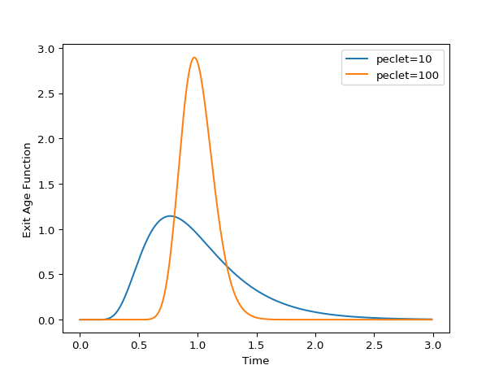

Axial Dispersion closed-closed¶
Closed-closed axial dispersion model
-
class
rtdpy.ad_cc.AD_cc(tau, peclet, dt, time_end, nx=200, a=10000, rtol=1e-05, atol=1e-10, max_step=None)[source]¶ Bases:
rtdpy.rtd.RTDCreate Axial Dispersion with closed-closed boundary conditions Residence Time Distribution (RTD) model. [1] [2]
Solution of equation
\[\frac{\partial C}{\partial \theta} = \frac{1}{Pe}\frac{\partial^2 C}{\partial z^2} - \frac{\partial C}{\partial z}\]where \(\theta = t/\tau\) is dimensionless time, \(z\) is dimensionless length, and an impulse input at z=0 with Danckwerts BCs
\[\begin{split}E(t) = C(z=1, t)\\ C_{in} = \delta(t)\\ C_{in} = C\rvert_{z=0} - \frac{1}{Pe}\frac{\partial C}{\partial z}\biggr\rvert_{z=0}\\ \frac{\partial C}{\partial z} = 0, z=1\end{split}\]and initial conditions
\[C=0 \text{ for } t=0\]The inpulse input is approximated by a fast exponential.
- Parameters
- tauscalar
L/U or mean residence time.
tau>0- pecletscalar
Reactor Peclet number (L*U/D).
peclet>0- dtscalar
Time step for RTD.
dt>0- time_endscalar
End time for RTD.
time_end>0
- Other Parameters
- nxoptional
Number of points to discretize 1D PDE. Default is 200.
- aoptional
Rate at which to introduce material. The inverse of a is the approximate amount of time to resolve the impulse input. Default is 10000.
- rtoloptional
Relative tolerance to use in ODE solver. Default is 1e-5
- atoloptional
Absolute tolerance to use in ODE solver. Default is 1e-10.
- max_stepoptional
Maximum time step size (dimensionless) to use in ODE solver. Default is 0.01.
References
- 1
Pearson J.R.A. (1959) A note on the “Danckwerts” boundary conditions for continuous flow reactors. “Chemical Engineering Science”, 6, 281-284.
- 2
Danckwerts P.V. (1953) Continuous flow systems: Distribution of Residence Times. “Chemical Engineering Science”, 2, 1-13.
Examples
>>> import matplotlib.pyplot as plt >>> import rtdpy >>> for pe in [10, 100]: ... a = rtdpy.AD_cc(tau=1, peclet=pe, dt=.01, time_end=3) ... plt.plot(a.time, a.exitage, label=f"peclet={pe}") >>> plt.xlabel('Time') >>> plt.ylabel('Exit Age Function') >>> plt.legend() >>> plt.show()
-
property
dt¶ Time step for RTD
-
property
exitage¶ Exit age distribution for RTD
-
property
exitage_norm¶ Normalized Exit Age Distribtion for RTD
-
frequencyresponse(omegas)¶ - Parameters
- omegasndarray
frequencies at which to evaluate magnitude response
- Returns
- magnitudendarray
frequency magnitude response at omegas
-
funnelplot(times, disturbances)¶ Return maximum output signal due to square disturbances.
Uses method from [Garcia] . Also returns meshgrid for times and disturbance inputs for ease of plotting.
- Parameters
- timesarray_like, size m
Times to determine funnelplot
- disturbancesarray_like, size n
Disturbance magnitudes
- Returns
- x2D meshgrid size (mxn)
times
- y2D meshgrid size (mxn)
disturbances
- response2D meshgrid size (mxn)
maximum response at (x,y)
References
- Garcia
Garcia-Munoz S., Butterbaugh A., Leavesley I., Manley L.F., Slade D., Bermingham S. (2018) A flowhseet model for the development of a continuous process for pharmaceutical tablets: An industrial perspective. “AIChE Journal”, 64(2), 511-525.
-
integral()¶ Integral of RTD.
-
mrt()¶ Mean residence time of RTD.
-
output(inputtime, inputsignal)¶ Convolves input signal with RTD
- Parameters
- inputtimendarray
Times of input signal, which must have same dt as RTD. Size m
- inputsignalndarray
Input signal. Size n
- Returns
- outputsignalndarrary
Output signal at same dt. Size m + n -1
-
property
peclet¶ Peclet number.
-
sigma()¶ Variance of RTD.
-
property
stepresponse¶ Step respose of RTD
-
property
stepresponse_norm¶ Normalized step respose of RTD
-
property
tau¶ Tau
-
property
time¶ Time points for exitage function.
-
property
time_end¶ Last time point for RTD
Define PDE for closed-closed Axial Dispersion model.